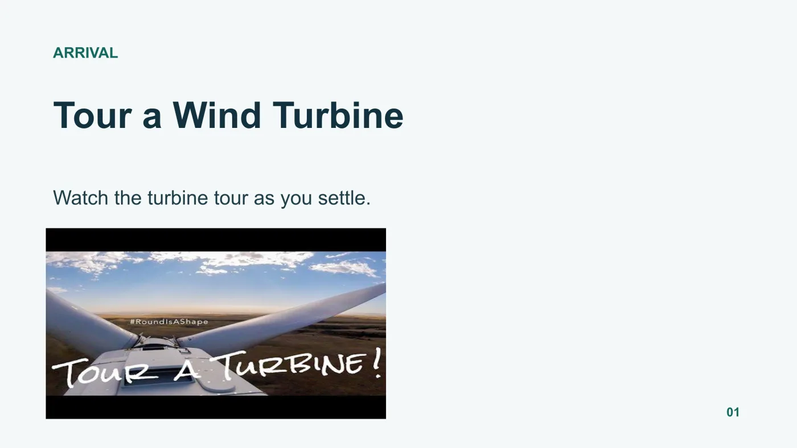
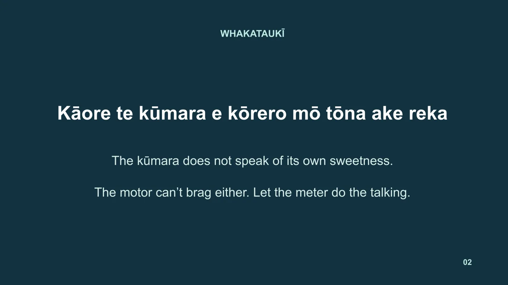
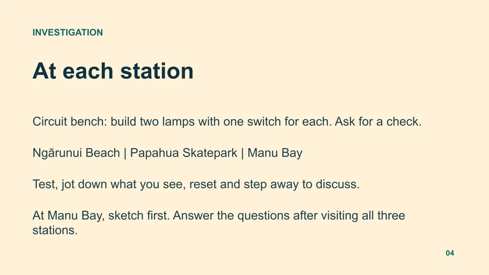
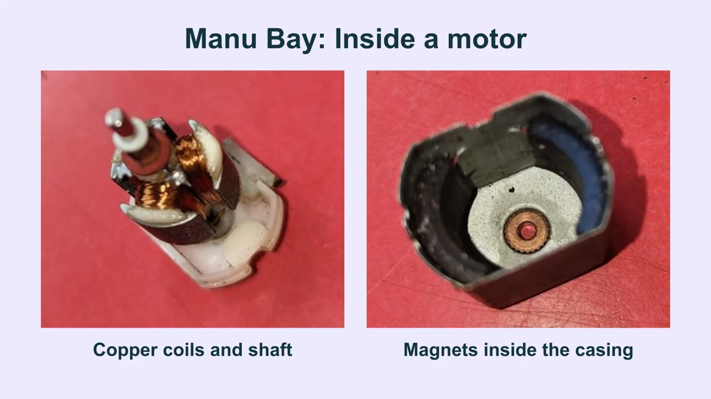
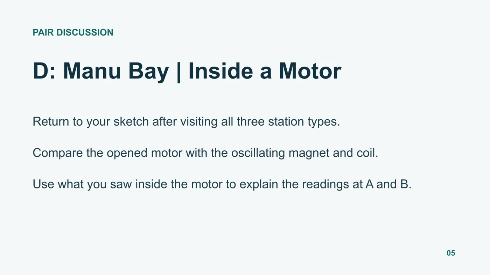
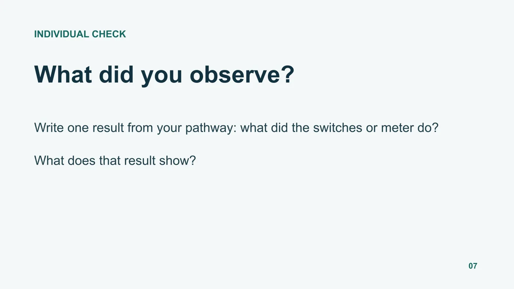

Professional Experience 1
Lesson 09: How do we generate electricity?
Year 10 Science 1 · 11 Nov 2026 · Completed · Teaching slides







Professional Experience 1
Year 10 Science 1 · 11 Nov 2026 · Completed · Teaching slides





